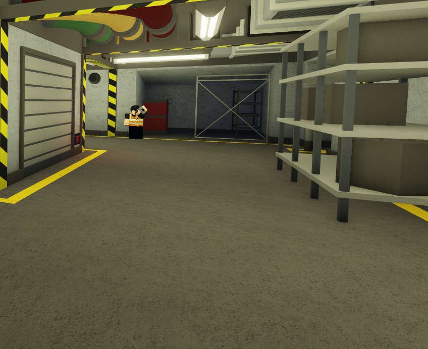
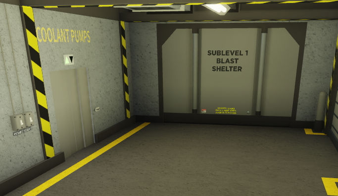

THIS is Sub-Level 1. The most-used transportation area in QSERF/MRC. It can get you many places quickly. One such
place is Sub-Level 2, which has TWO entrances, pictured here:
Pretty cool, right? It also has a way to Foxtrot-9 (ew) and other parts of the facility through here:

Yeah that's cool and all, but you can also get to the coolant pumps and even a BLAST SHELTER!

It even has a VENT!
Lastly, Sub-Level 1 has directions and even a way to get to the Dark Matter Reactor! Here are the directions:
And the Dark Matter Reactor Control Room and catwalk to the Core Chamber airlock:
And that's why Sub-Level 1 is better than Foxtrot-9. There is no form asking which one is better, this is the object truth.